¿Qué vemos cuando vemos una galaxia?
La visión multi-longitud de onda: la misma Vía Láctea fotografiada desde el radio hasta los rayos gamma muestra diez "galaxias" distintas. Al final de la clase sabremos decodificar cada imagen: estrellas en el óptico e infrarrojo cercano, polvo en el infrarrojo medio y lejano, gas — frío, tibio, caliente y extremadamente caliente — en el radio, los rayos X y los rayos gamma.
Cuando miras la foto de una galaxia, la primera pregunta que debes hacerte no es "¿qué galaxia es?" sino ¿en qué longitud de onda está tomada esta imagen? La respuesta cambia por completo lo que estás viendo. Esta clase construye, pieza por pieza, el diccionario que traduce longitud de onda observada → componente física de la galaxia. La herramienta central es sorprendentemente simple: casi toda la radiación del universo es termal — un cuerpo a temperatura emite con un máximo en una longitud de onda que depende solo de . Para alguien con formación de ingeniería: el espectro electromagnético funciona como un termómetro remoto, y cada banda de observación es un canal que muestrea un rango de temperaturas distinto del sistema.
Una galaxia, diez imágenes
La Vía Láctea fotografiada en todo el espectro electromagnético.
La clase abre con una imagen famosa (portada de un libro de galaxias, elaborada por la NASA): la Vía Láctea vista en diez longitudes de onda distintas, de arriba hacia abajo: radio continuo, hidrógeno atómico, otro radio continuo, hidrógeno molecular, infrarrojo (tres franjas), óptico, rayos X y rayos gamma. La franja óptica es lo único que verían nuestros ojos en un lugar muy oscuro; todas las demás son invisibles para nosotros.
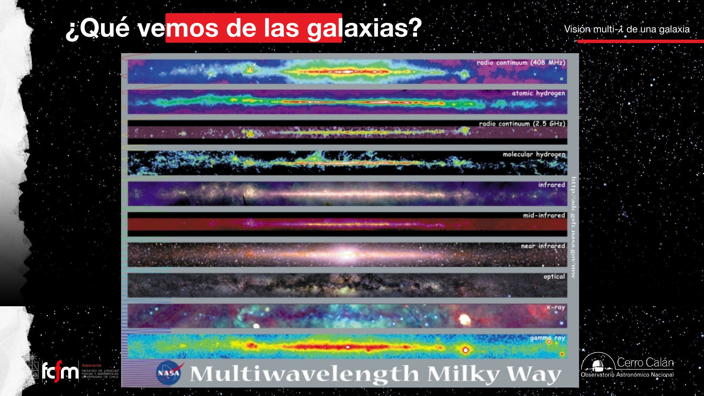
Es exactamente un problema de análisis multiespectral: el mismo sistema físico medido con diez sensores, cada uno sensible a una banda de frecuencia distinta. Ninguna banda cuenta la historia completa; el estado del sistema se reconstruye fusionando canales. La pregunta de la clase es: ¿qué "sensor" ve qué subsistema, y por qué?
Radiación electromagnética y el ojo humano
Un rango de 22 órdenes de magnitud… del que percibimos menos de un octava.
Radiación electromagnética, ondas electromagnéticas o simplemente luz: distintos nombres para lo mismo. El espectro va desde los rayos gamma (longitudes de onda de femtómetros, 10−15 m) hasta ondas de radio de frecuencia extremadamente baja (megámetros, 106 m u onda aún más larga): unos 22 órdenes de magnitud en longitud de onda. Nuestros ojos perciben solo la ventanita del rango visible: aproximadamente de 400 a 750 nm según la diapositiva (el profesor lo estira "de ~300 a ~700 nm"; la frontera exacta es difusa). Dentro de ese rango sí discriminamos longitud de onda — eso es lo que llamamos color — pero fuera de él somos ciegos.
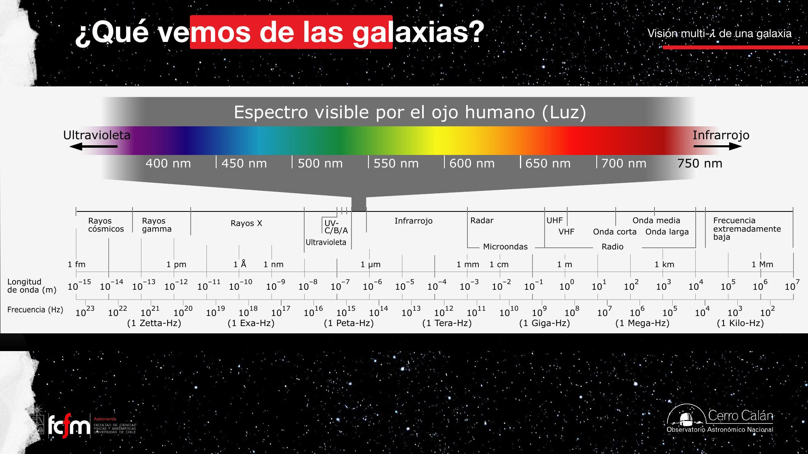
Los ojos tienen dos tipos de detectores: conos (sensibles al color) y bastones (sensibles a la intensidad). Perros y gatos casi no tienen visión de color — se comenta en clase que los perros distinguirían algo los amarillos, quizá por eso el entusiasmo con las pelotas de tenis. Un detector astronómico enfrenta el mismo diseño: ¿mido intensidad total o resuelvo en longitud de onda?
La atmósfera: qué llega al suelo
Ventanas transparentes y muros opacos — y por qué eso decide dónde poner los telescopios.
No toda la radiación del espacio llega a la superficie terrestre. La atmósfera es opaca a los rayos gamma, los rayos X y gran parte del ultravioleta — algo muy conveniente: si no, estaríamos "literalmente fritos". En el visible es casi totalmente transparente; hacia el infrarrojo se vuelve progresivamente opaca, con algunas ventanas; y en radio hay una ventana enorme y transparente.
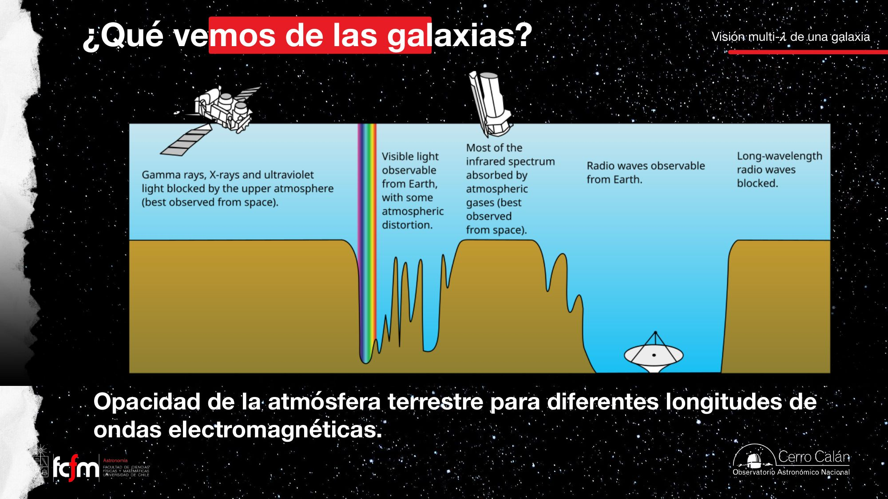
La atmósfera es un filtro pasabanda con dos ventanas principales (óptico y radio) y varias sub-bandas estrechas en el IR. El "presupuesto de enlace" de cualquier observación incluye esta función de transferencia del canal: si tu señal cae en una banda de rechazo, no hay ganancia de antena que la recupere — hay que mover el receptor fuera del canal (al espacio).
Qué compone una galaxia (y qué brilla)
De las tres componentes de la clase 1, una es invisible por definición.
Recordatorio de la clase 1: una galaxia se compone de (1) estrellas y sus sistemas planetarios, (2) lo que hay entre las estrellas — el medio interestelar o ISM (InterStellar Medium) — y (3) materia oscura. Al preguntar qué vemos, la materia oscura sale de la ecuación de inmediato: es oscura a toda longitud de onda — no emite, no absorbe, no interactúa con la radiación electromagnética. Y los planetas son tan débiles que detectarlos directamente es casi imposible (quienes buscan exoplanetas sueñan con hacerlo).
La consecuencia es una simplificación enorme: si aprendemos cómo emiten las estrellas y cómo emite el medio interestelar, sabemos cómo emite una galaxia completa. Ese es el programa del resto de la clase.
Luz de galaxia = luz de estrellas + luz del ISM. Dos mecanismos de emisión por aprender, y toda imagen astronómica de una galaxia queda explicada.
Cuerpo negro: Planck, Wien y la cuarta potencia
Cómo emite un cuerpo compacto por el solo hecho de tener temperatura.
Las estrellas emiten radiación de cuerpo negro: la emisión de un cuerpo debido a su temperatura, válida cuando el cuerpo es compacto (denso). En la clase se conecta con el colapso gravitacional visto antes: los cuerpos colapsados gravitacionalmente — como las estrellas — están garantizados de emitir (aproximadamente) como cuerpo negro. Fue Planck quien derivó la forma de la curva: la ley de Planck dice cuánta intensidad se emite en cada longitud de onda, dada la temperatura.
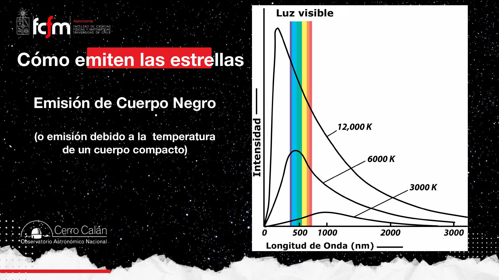
La ley de Planck implica dos propiedades que la clase destaca una y otra vez:
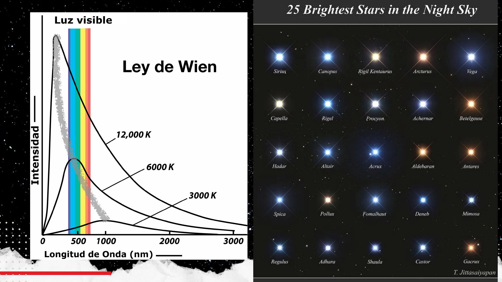
¿Y los rayos gamma del núcleo estelar?
Pregunta de un asistente: si en el núcleo de una estrella los fotones nacen como rayos gamma, ¿por qué no vemos rayos gamma escapando? Respuesta del profesor: esos fotones viajan desde el centro hasta la superficie perdiendo energía en el camino (interactuando con la materia), y al llegar a la fotósfera su distribución corresponde exactamente a la temperatura superficial (miles de K, no millones). La radiación que escapa es la del cuerpo negro a la temperatura de la superficie. El detalle de esa "migración" de fotones se verá en el curso de estrellas.
La curva de Planck es la densidad espectral de potencia de un emisor térmico ideal, con un único parámetro T. La ley de Wien es la "frecuencia del pico" y Stefan–Boltzmann la "potencia total integrada". Identificar la temperatura de una fuente a partir del pico de su espectro es un problema clásico de estimación de parámetros con una señal de forma conocida.
Estrellas: diagrama HR, secuencia principal y colores
Dónde viven las estrellas en el plano temperatura–luminosidad.
El diagrama HR (Hertzsprung–Russell) grafica temperatura superficial vs. luminosidad de las estrellas (ambos ejes logarítmicos; la temperatura crece hacia la izquierda, por convención histórica). Las estrellas pasan la mayor parte de su vida en la secuencia principal, la diagonal que cruza el diagrama de punta a punta. Nuestro Sol está en ella, como la gran mayoría de las estrellas.
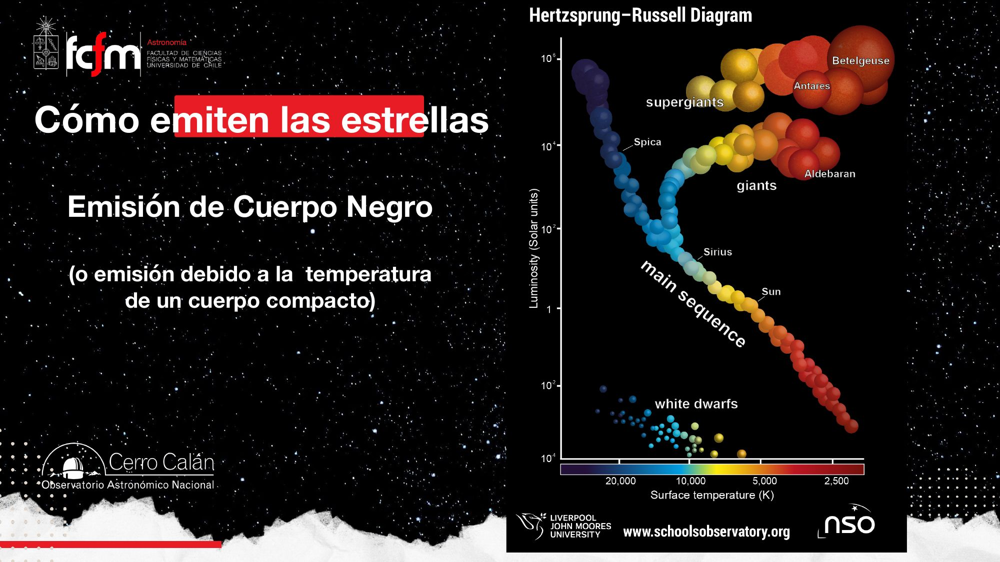
Lo que importa para esta clase es el rango de temperaturas superficiales de la secuencia principal. Regla mnemotécnica del profesor: de 3.000 K (las más frías) a 30.000 K (las más calientes) — un factor 10 que conviene memorizar. Combinado con el cuerpo negro:
- Estrella de ~3.000 K: poco luminosa, máximo de emisión en el infrarrojo cercano (~1 μm). Se ve rojiza.
- Estrella tipo Sol (~6.000 K): máximo en pleno rango visible. No es coincidencia que nuestros ojos evolucionaran justo ahí, donde el Sol emite máximamente.
- Estrella de 12.000–30.000 K: muchísimo más luminosa, máximo en el ultravioleta. Se ve azul (la "cola" visible de su curva de Planck).
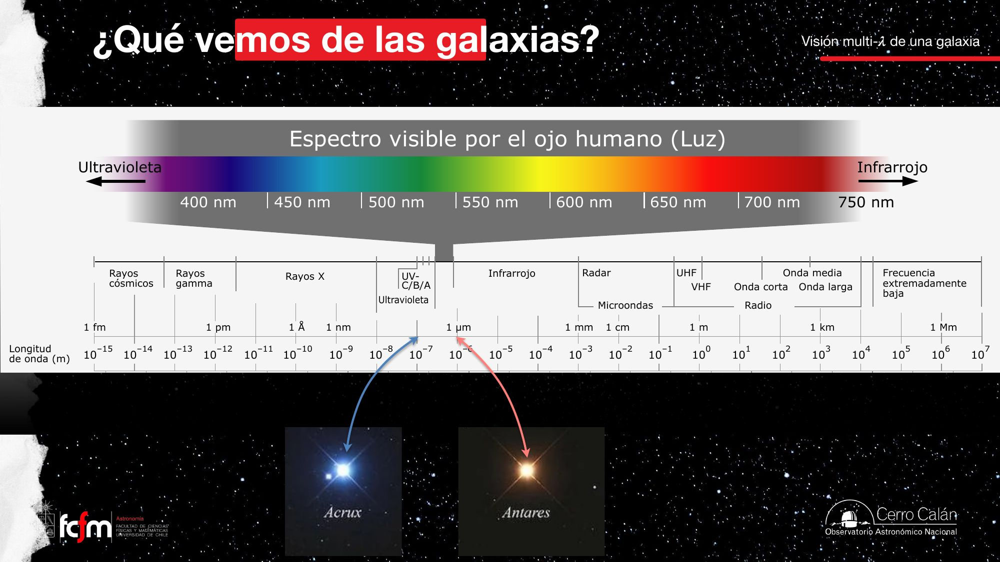
El rango acotado de las estrellas — y los extremos
Del UV al infrarrojo cercano hay estrellas. Más allá, casi todo es medio interestelar.
Conclusión central: como las superficies estelares van de 3.000 a 30.000 K, las estrellas — lejos los objetos más luminosos de una galaxia — emiten significativamente solo entre el ultravioleta y el infrarrojo cercano (~1–3 μm). La ley de Planck predice emisión en toda longitud de onda, pero lejos del pico la cantidad es insignificante. Por lo tanto: cualquier imagen de una galaxia fuera de ese rango no muestra estrellas: muestra el medio interestelar (con pocas excepciones).
Excepciones hacia lo más caliente (λ más corta)
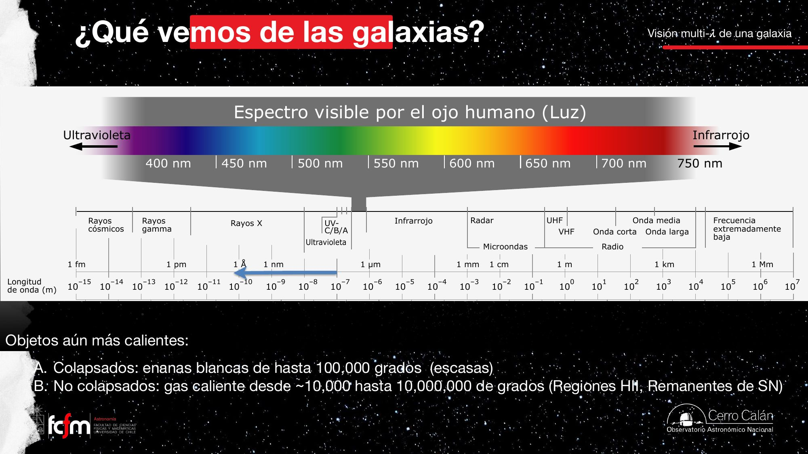
Las enanas blancas son lo que queda cuando muere una estrella como el Sol: el núcleo desnudo, un remanente — el profesor prefiere decir "cadáver de estrella" — que ya no produce energía por fusión. Recién formadas pueden tener ~100.000 K en superficie (¡pico en el UV extremo / rayos X blandos!), pero como nada repone la energía radiada, se enfrían y apagan lentamente. Son escasas comparadas con las estrellas normales. Lo mismo aplica a púlsares / estrellas de neutrones (cadáveres de estrellas más masivas, preguntados por un asistente): recién formados son calientes y energéticos, pero son poquísimos y se enfrían. ¿Son estrellas? Para el profesor, no: ya no producen energía por fusión nuclear en el núcleo, que es lo que define a una estrella.
Excepciones hacia lo más frío (λ más larga)
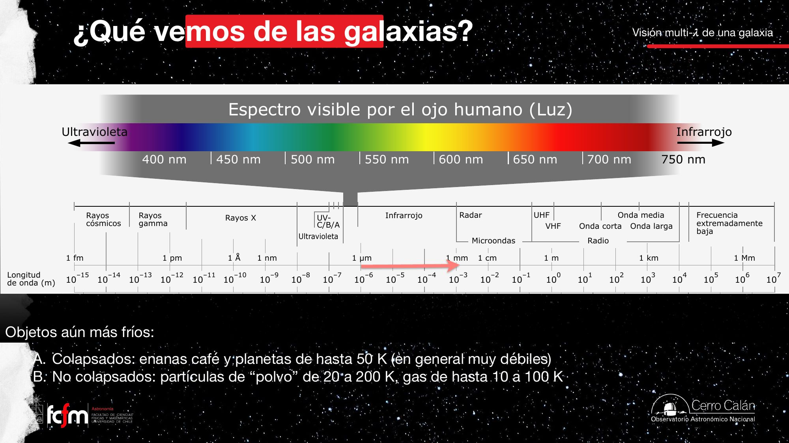
Las enanas café son "estrellas fallidas": objetos que nunca lograron encender la fusión. Temperaturas bajo 3.000 K — típicamente ~1.000 K o unos cientos. Los planetas llegan hasta ~50 K. Pero aquí Stefan–Boltzmann juega en contra: al ir la emisión como , estos cuerpos fríos son tremendamente débiles y casi no aportan luz a la galaxia. La emisión dominante a longitudes de onda largas viene del medio interestelar: polvo (20–200 K) y gas frío (10–100 K — ¡apenas 10 grados sobre el cero absoluto!).
Óptico + IR cercano ⇒ estrellas. λ más corta (UV extremo, X, gamma) ⇒ gas caliente del ISM (+ raras enanas blancas jóvenes). λ más larga (IR medio/lejano, radio) ⇒ polvo y gas frío del ISM (+ débiles enanas café y planetas). Mientras hay cientos de miles de millones de estrellas en secuencia principal, los cadáveres calientes son un puñado: no cambian el balance.
Radiación termal y no termal
Cuerpo negro, Bremsstrahlung y sincrotrón: tres mecanismos, una jerarquía.
Terminología: cuando la radiación se produce a causa de la temperatura de un cuerpo, hablamos de radiación termal. La clase distingue dos casos según la densidad del emisor:
- Cuerpo colapsado (denso/compacto): emite (aproximadamente) como cuerpo negro. Es el caso de las estrellas.
- Cuerpo no colapsado (gas difuso): el mecanismo termal es Bremsstrahlung (del alemán, "radiación de frenado"), también llamado free-free. Es como emite el gas suelto del ISM, esté a 10.000 o a 10 millones de K.
Existe también radiación no termal — producida por mecanismos que no dependen de la temperatura. El ejemplo mencionado es la emisión sincrotrón, que requiere campos magnéticos (electrones espiralando en ellos). Se menciona por completitud: el mensaje de la clase es que la mayor parte de la radiación del universo es de origen termal, y que la mayoría de la energía radiante que recibimos es emisión de cuerpo negro proveniente de las estrellas.
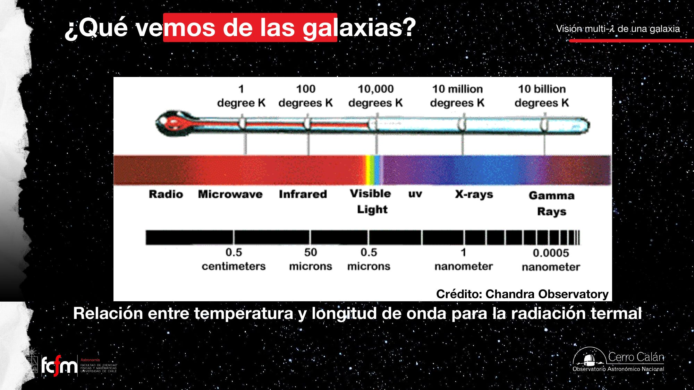
Se dice "Kelvin", no "grados Kelvin" — la escala es absoluta. Y ojo con los billones: en el diagrama (norteamericano) billion = 10⁹; nuestro billón = 10¹². El gas más caliente discutido en clase alcanza ~10⁹–10¹⁰ K en los extremos del diagrama, y el gas que domina los rayos X galácticos está entre 10 y 100 millones de K.
El polvo interestelar
El 1% en masa del ISM que, sin embargo, domina lo que (no) vemos.
El polvo son partículas sólidas del medio interestelar, de tamaños del orden de la micra o menores (granos formados por muchísimas moléculas; se piensa que hay dos familias, una dominada por carbono y otra por silicio). Determinar sus propiedades en detalle es difícil: salvo granos recolectados dentro del Sistema Solar, todo se infiere de la luz que recibimos.
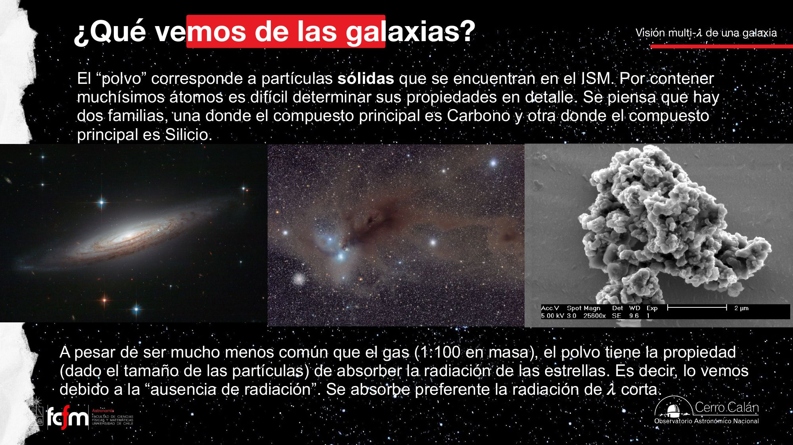
¿Por qué se nota tanto si es el 1%? Porque el polvo absorbe la radiación: lo vemos "por ausencia de luz", tapando lo que hay detrás (esas manchas y franjas negras). Y la propiedad crucial: absorbe preferentemente las longitudes de onda cortas. Las estrellas azules detrás de una nube se absorben más que las rojas.
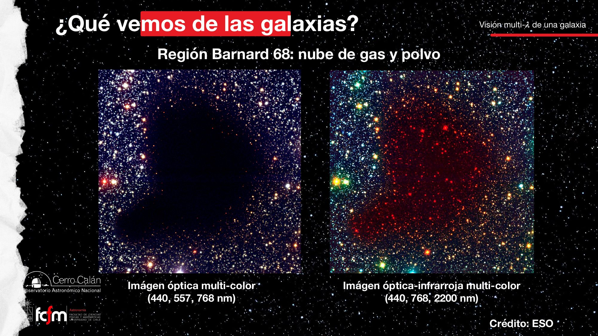
Consecuencia práctica: nosotros estamos embebidos en el plano del disco galáctico, así que el polvo nos bloquea la visión óptica a través del disco. Por eso el centro de la Vía Láctea se estudia en el infrarrojo, la única banda donde su radiación logra llegarnos.
El polvo también emite: el "cuerpo gris"
El polvo no puede absorber indefinidamente — se calentaría hasta desintegrarse. Está en equilibrio térmico: re-emite la energía que absorbe, de forma cercana al cuerpo negro pero no exacta (los granos son demasiado pequeños para una interacción radiación–materia perfecta): se le llama cuerpo gris. Con temperaturas de 20–200 K, el polvo emite en el infrarrojo medio y lejano: a ~20 μm vemos polvo caliente; a ~100 μm, el polvo de todo el plano galáctico re-emitiendo lo que absorbió en el óptico/UV.
El polvo es un atenuador dependiente de frecuencia (un filtro pasa-bajos en frecuencia óptica: deja pasar λ largas, bloquea λ cortas) que además re-emite la potencia absorbida en otra banda — como un componente con pérdidas que disipa calor y lo re-irradia en el infrarrojo. Balance de energía: potencia absorbida (UV/óptico) = potencia re-emitida (IR). Nada se pierde; cambia de banda.
Fases del ISM: ¿y por qué no hay líquidos?
Gas y sólido, sí. Líquido, no: el estado líquido exige condiciones demasiado acotadas.
Pregunta que el profesor confiesa haberse hecho de estudiante: si el ISM tiene fase gaseosa (gas) y fase sólida (polvo), ¿por qué no hay líquidos? La respuesta está en los diagramas de fase: el estado líquido de cualquier sustancia existe solo en un rango de presión y temperatura sumamente acotado. El agua es líquida en apenas 100 grados de rango (0–100 °C a 1 atm) — "pestañaste y no viste el agua líquida", comparado con el rango cósmico de temperaturas. En ese sentido, la Tierra es un lugar muy especial.
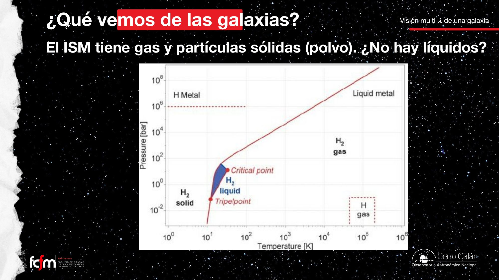
El estado del ISM se describe entonces con un diagrama temperatura vs. densidad. Las llamadas fases del medio interestelar son regiones características de ese plano:
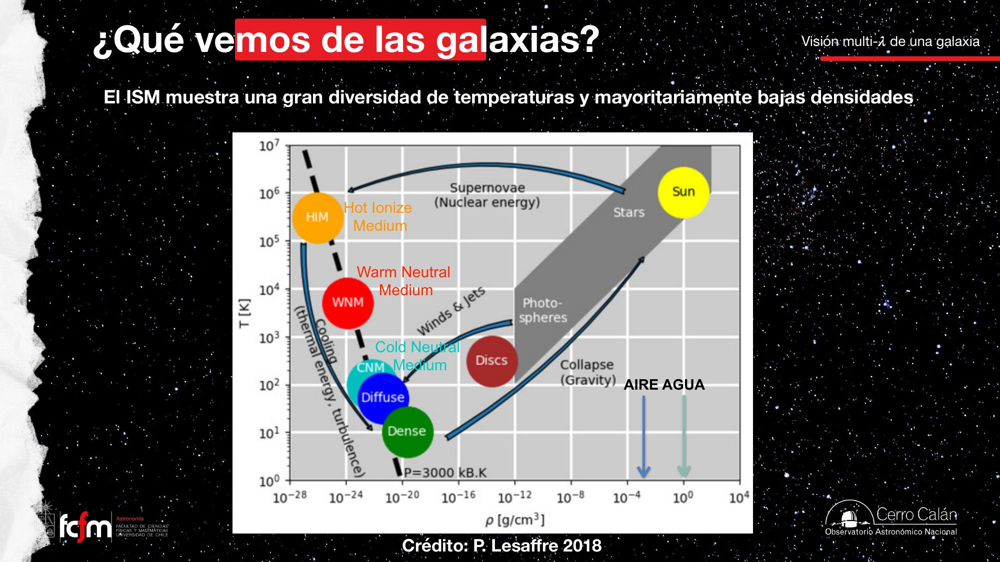
El Sol es un caso extremo de denso y caliente, pero su densidad promedio es del orden de la del agua (la densidad crece muchísimo hacia el núcleo; las capas externas son gaseosas y tenues). El aire que respiramos, siendo un gas "liviano", es tremendamente denso comparado con el ISM: nota en el diagrama que hay ~15–20 órdenes de magnitud entre el aire (~10⁻³ g/cm³) y el medio interestelar (~10⁻²⁴ g/cm³). El "vacío" de laboratorio más perfecto es una multitud al lado del ISM.
Un asistente pregunta si a 10 millones de K empieza la formación de estrellas. Al revés: para formar estrellas se necesita gas muy frío (y denso). El tema queda anunciado para más adelante en el curso.
Decodificando la Vía Láctea multi-λ
Volvemos a la imagen inicial — ahora con el diccionario completo.
Con todo lo anterior, la imagen de la sección 1 se puede "rellenar" banda por banda. Es el clímax pedagógico de la clase:
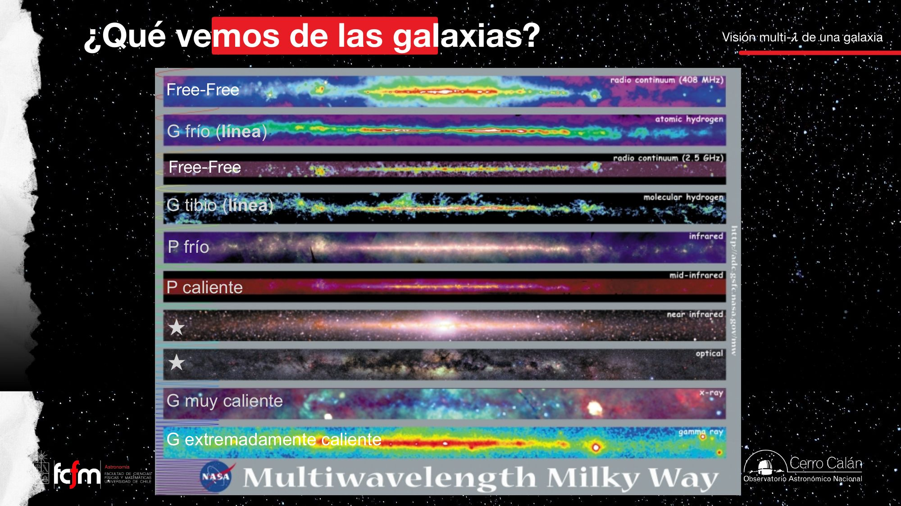
| Banda | Qué vemos | Mecanismo |
|---|---|---|
| Radio continuo (408 MHz, 2,5 GHz) | Gas ionizado difuso | Free-free (Bremsstrahlung), según la anotación de la diapositiva |
| Hidrógeno atómico (radio) | Gas frío | Línea de emisión (21 cm) |
| Hidrógeno molecular (radio) | Gas tibio | Línea de emisión |
| Infrarrojo (lejano, ~100 μm) | Polvo frío del plano galáctico re-emitiendo | Cuerpo gris (≈ termal) |
| Infrarrojo medio (~20 μm) | Polvo caliente | Cuerpo gris (≈ termal) |
| Infrarrojo cercano (hasta ~3 μm) | Estrellas — con mucha menos absorción por polvo que en el óptico (se ve el bulbo central) | Cuerpo negro |
| Óptico | Estrellas — cruzadas por parches negros de polvo que absorbe | Cuerpo negro |
| Rayos X | Gas muy caliente (10–100 millones K) + algunos cuerpos puntuales (remanentes de supernova) | Bremsstrahlung |
| Rayos gamma | Gas extremadamente caliente + fuentes raras (p. ej. estrellas de neutrones) | Bremsstrahlung / procesos energéticos |
| Ultravioleta | (No hay imagen.) Las estrellas más calientes emitirían aquí, pero el polvo absorbe tan eficientemente que se vería casi todo negro | — |
Solo las imágenes ópticas, del IR cercano (y una más) están construidas con tres filtros y colores "informativos"; las demás franjas usan colores ficticios que codifican pura intensidad (podrían ser escala de grises). Por eso una misma fuente puede verse blanca en una franja y de otro color en otra: no compares colores entre franjas, compara estructuras.
Líneas espectrales y la línea de 21 cm
El otro modo de emisión del gas: transiciones cuánticas discretas.
La transcripción disponible de la clase termina en el descanso, justo cuando el profesor anuncia: "ahora les voy a explicar qué diablos es una línea de emisión". Esta sección se reconstruye a partir de las diapositivas 23–28 de la clase (más contexto estándar donde se indica); tómala como material de diapositivas, no como transcripción literal.
En la tabla anterior, dos franjas de radio no son continuo sino líneas de emisión: el hidrógeno atómico y el molecular. Una línea espectral es emisión (o absorción) a una longitud de onda discreta, y para entenderla "vamos a necesitar Mecánica Cuántica" (título de la diapositiva): en el modelo de Bohr, los electrones ocupan niveles de energía discretos, y al saltar de un nivel a otro emiten o absorben un fotón de energía exacta .
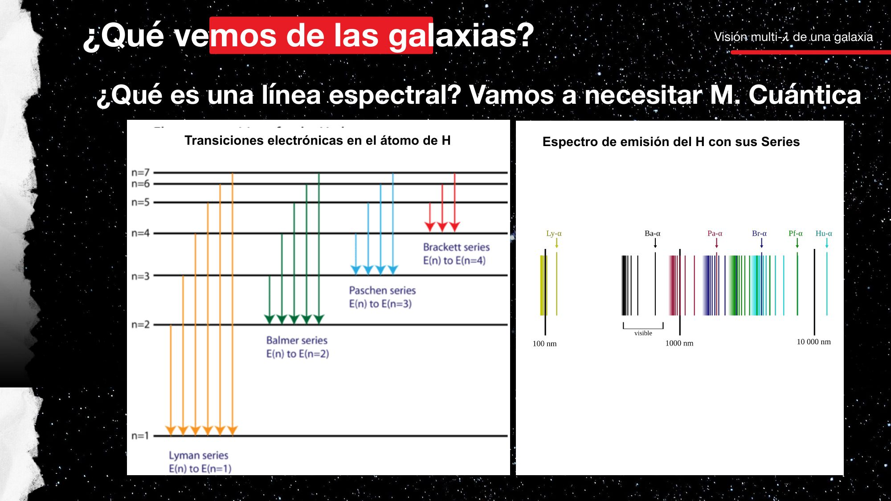
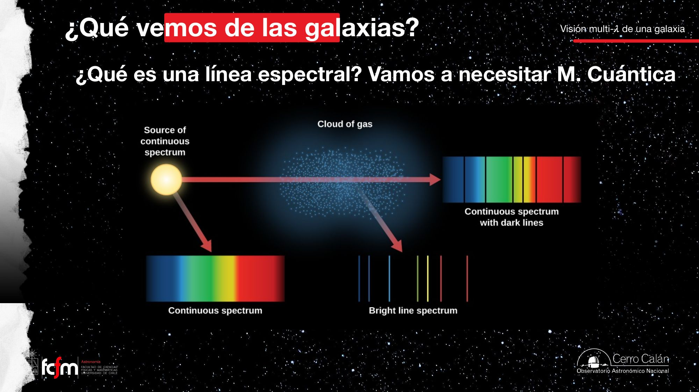
Las diapositivas conectan esto con las estrellas: los espectros estelares se clasifican en tipos espectrales O B A F G K M, ordenados por temperatura de ~50.000 K (O) a ~3.500 K (M) — el Sol es tipo G (~6.000 K), Vega tipo A (~10.000 K) — cada uno con líneas de absorción características. Y con las galaxias: el espectro óptico de una galaxia cercana (M31, M101, NGC 3783) es la suma de las luces de sus estrellas y su gas, con líneas de absorción y emisión superpuestas al continuo.
La línea de 21 cm del hidrógeno neutro
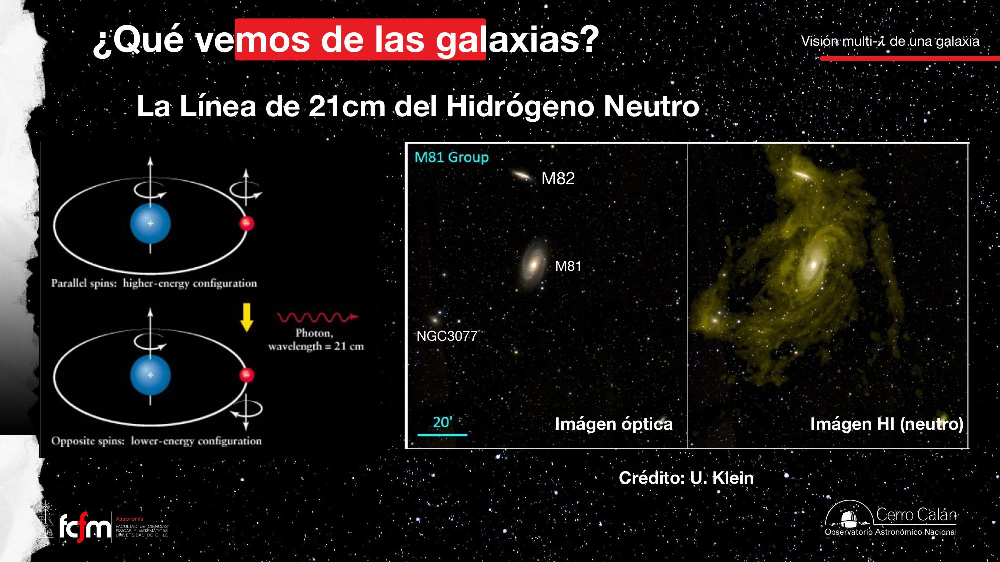
Esta línea es la herramienta reina para mapear el gas frío neutro de las galaxias: atraviesa el polvo sin inmutarse (λ larguísima) y se observa desde el suelo (ventana de radio). Es la franja "hidrógeno atómico" de la imagen multi-λ de la Vía Láctea.
El continuo termal es "ruido de banda ancha" cuya envolvente delata la temperatura; las líneas espectrales son tonos puros en frecuencias conocidas — como portadoras de referencia. Por eso son tan valiosas: permiten identificar la sustancia (frecuencia patrón) y, midiendo su corrimiento Doppler, la velocidad del gas. La de 21 cm es además una transición "prohibida" (rarísima por átomo, ~10⁷ años de vida media — dato externo), detectable solo porque hay cantidades astronómicas de hidrógeno.
Síntesis: la SED de la galaxia M82
Todas las componentes de la clase, sumadas en un solo espectro real.
Esta diapositiva (29) tampoco está cubierta por la transcripción disponible; la descripción sigue lo que muestra la propia lámina.
La Distribución Espectral de Energía (SED, Spectral Energy Distribution) de una galaxia es su emisión total en función de la longitud de onda — el "espectro de banda anchísima" que integra todo lo visto en la clase. La de M82 (una galaxia cercana con formación estelar intensa) se descompone exactamente en las piezas que aprendimos:
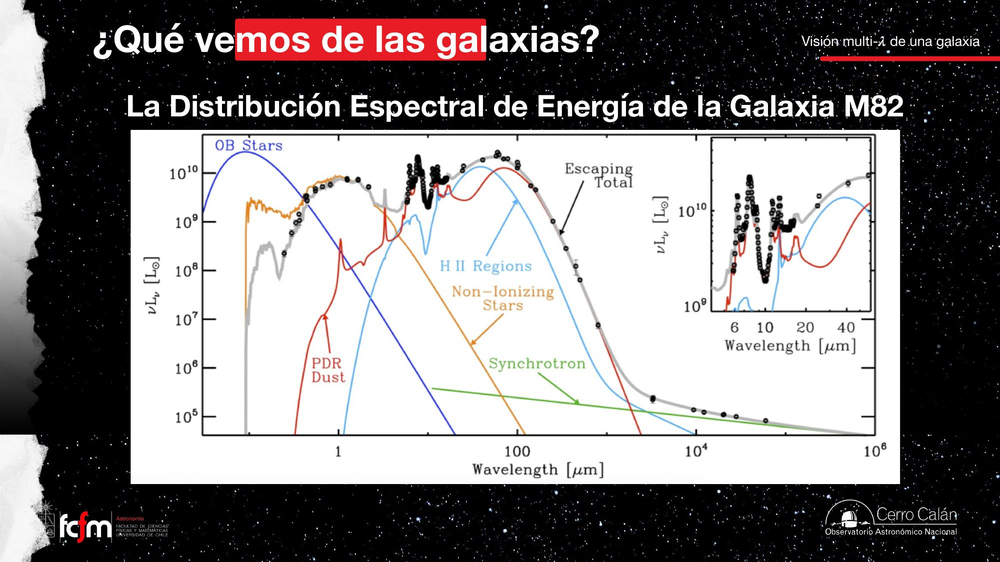
La pregunta inicial — ¿qué vemos cuando vemos una galaxia? — queda respondida con un diccionario de tres entradas: estrellas (cuerpo negro, UV→IR cercano), polvo (absorbe λ corta, re-emite como cuerpo gris en IR), gas (Bremsstrahlung y líneas, desde el radio hasta los rayos gamma según su temperatura). La clase 3, dictada la misma mañana, continúa desde aquí.
Conceptos clave
Tabla de repaso rápido.
| Concepto | Qué es / valor | Por qué importa |
|---|---|---|
| Rango visible | ~400–750 nm | Única banda que percibe el ojo; el "color" es discriminación de λ |
| Ventanas atmosféricas | Óptico, radio y sub-bandas del IR | Gamma/X/UV/IR lejano exigen telescopios espaciales |
| Componentes de una galaxia | Estrellas (+planetas), ISM, materia oscura | La materia oscura no interactúa con la luz: solo brillan estrellas e ISM |
| Cuerpo negro | Emisión termal de un cuerpo compacto (ley de Planck) | Describe cómo emiten las estrellas |
| Stefan–Boltzmann | Emisión ∝ T⁴ | Doble temperatura ⇒ 16× más radiación; los cuerpos fríos son débiles |
| Ley de Wien | λmax = b/T (pico ↔ temperatura) | El espectro como termómetro remoto; color estelar = temperatura |
| Secuencia principal | Diagonal del diagrama HR; 3.000–30.000 K | Etapa principal de la vida estelar; acota dónde emiten las estrellas (UV→IR cercano) |
| Enana blanca | Remanente ("cadáver") estelar, hasta ~100.000 K, se enfría | Excepción caliente, pero escasa; no produce energía por fusión |
| Enana café | Estrella fallida, <3.000 K (típicamente ~1.000 K) | Excepción fría; muy débil por la ley T⁴ |
| Radiación termal | Producida por la temperatura del cuerpo | Mecanismo dominante de la radiación en el universo |
| Bremsstrahlung (free-free) | Emisión termal de gas difuso (no colapsado) | Explica el radio continuo, rayos X y gamma del ISM |
| Sincrotrón | Emisión no termal; requiere campos magnéticos | Mencionada por completitud; visible en la SED en radio |
| Polvo interestelar | Granos sólidos ≲1 μm (familias C y Si); polvo:gas = 1:100 en masa | Absorbe preferentemente λ corta; re-emite como cuerpo gris en IR |
| Barnard 68 | Nube de gas y polvo: negra en óptico, transparente a 2.200 nm | Demostración experimental de la extinción selectiva |
| Fases del ISM | HIM (~10⁶ K), WNM (~10⁴ K), CNM (~10² K), denso (~10 K) | Gas de 10 K a 10⁷ K, densidades bajísimas; sin fase líquida |
| Línea espectral | Transición cuántica discreta (E = hν) | Huella digital química; series del H (Lyman, Balmer…) |
| Línea de 21 cm | Cambio de espín del H neutro (radio) | Mapea el gas frío; atraviesa el polvo; el gas se extiende más allá de las estrellas |
| Tipos espectrales | O B A F G K M (50.000 → 3.500 K) | Clasificación estelar por temperatura/líneas; el Sol es G |
| SED | Distribución espectral de energía de una galaxia | Suma de estrellas + gas + polvo (+ sincrotrón); cada componente domina su banda |
Exámenes de práctica
10 exámenes de 5 preguntas (3 de alternativas autocorregibles + 2 de respuesta escrita).
- Examen 01Espectro EM y atmósfera
- Examen 02Componentes y cuerpo negro
- Examen 03Planck, Wien y T⁴
- Examen 04Diagrama HR y colores
- Examen 05Cadáveres y objetos fríos
- Examen 06Termal vs no termal
- Examen 07El polvo interestelar
- Examen 08Fases del ISM
- Examen 09Líneas y los 21 cm
- Examen 10Integrador multi-λ